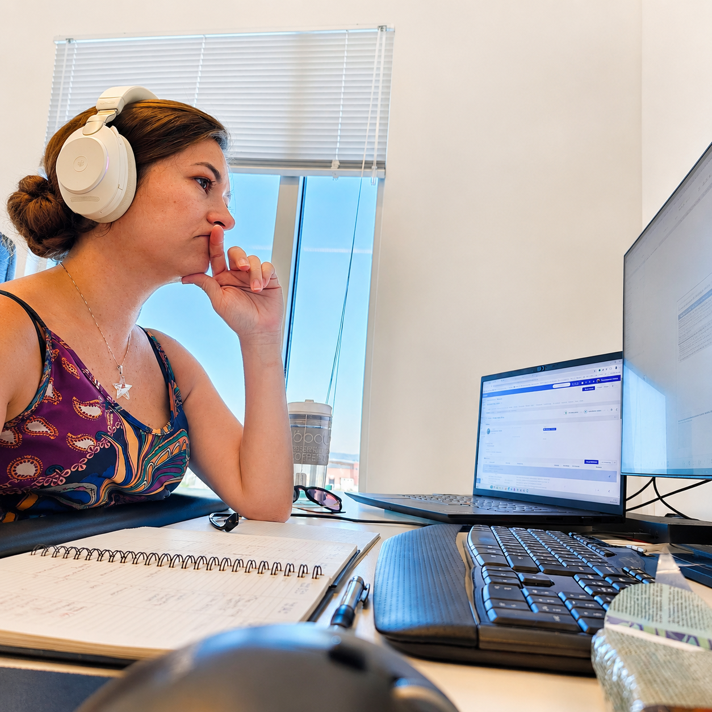

Add your image here'"/>Over four years at Mestergruppen Arkitekter AS, I contributed to more than 55 architectural projects throughout Norway — covering a spectrum from concept design (skisseprosjekter) to building application drawings (byggemeldingstegninger).
My responsibilities included energy and daylight simulations, site planning, and coordination for regulatory approval, enhancing my ability to deliver projects that effectively balance design quality, technical precision, and environmental performance.
I hold a Master of Science in Sustainable Architecture from NTNU, along with a degree in Architecture and Urbanism from Brazil, which provides me with an international perspective that connects design sensibility with analytical thinking.
My professional focus centres on exploring how BIM, parametric modelling, and automation can improve efficiency, collaboration, and sustainability within the built environment.
I have a particular passion for integrating digital workflows into architectural practice — developing pyRevit scripts to streamline Revit processes, experimenting with AI-based image recognition for design comparisons, and utilising mixed reality tools like Fologram and HoloLens to link digital models with physical construction.
I excel in multidisciplinary settings where technology, design, and sustainability intersect.